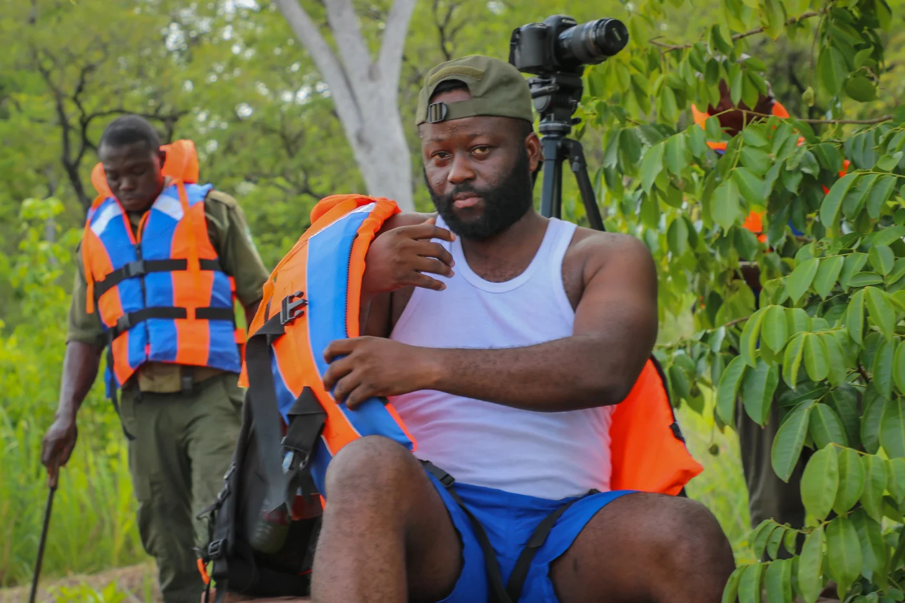
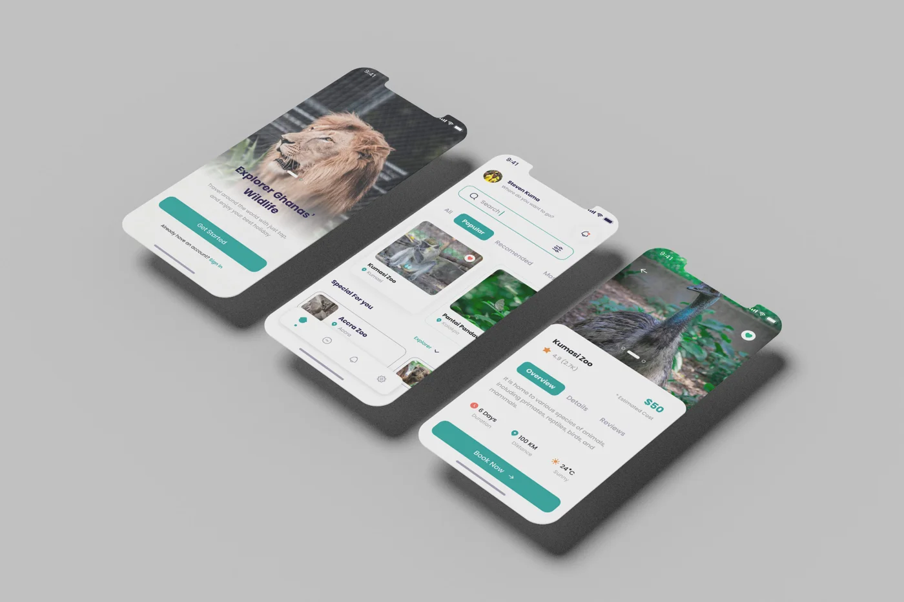
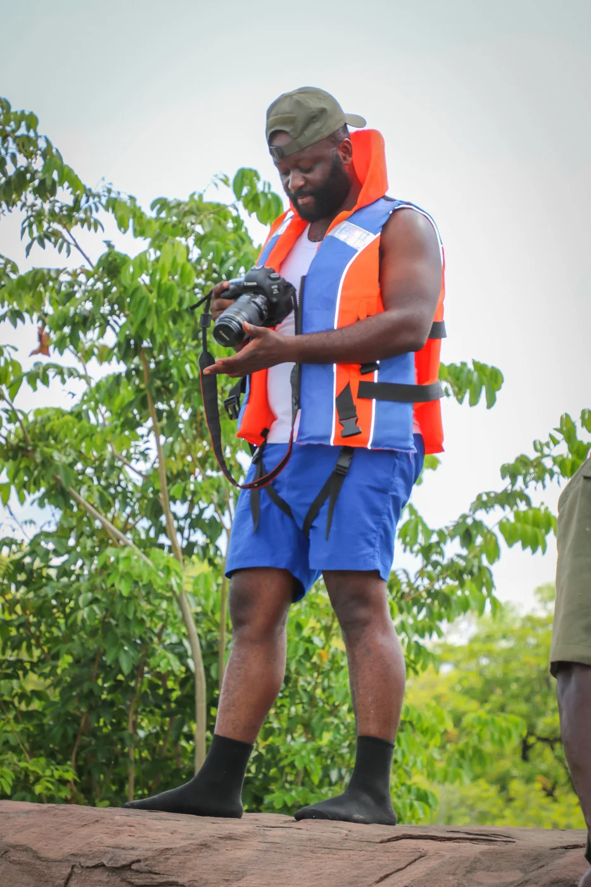
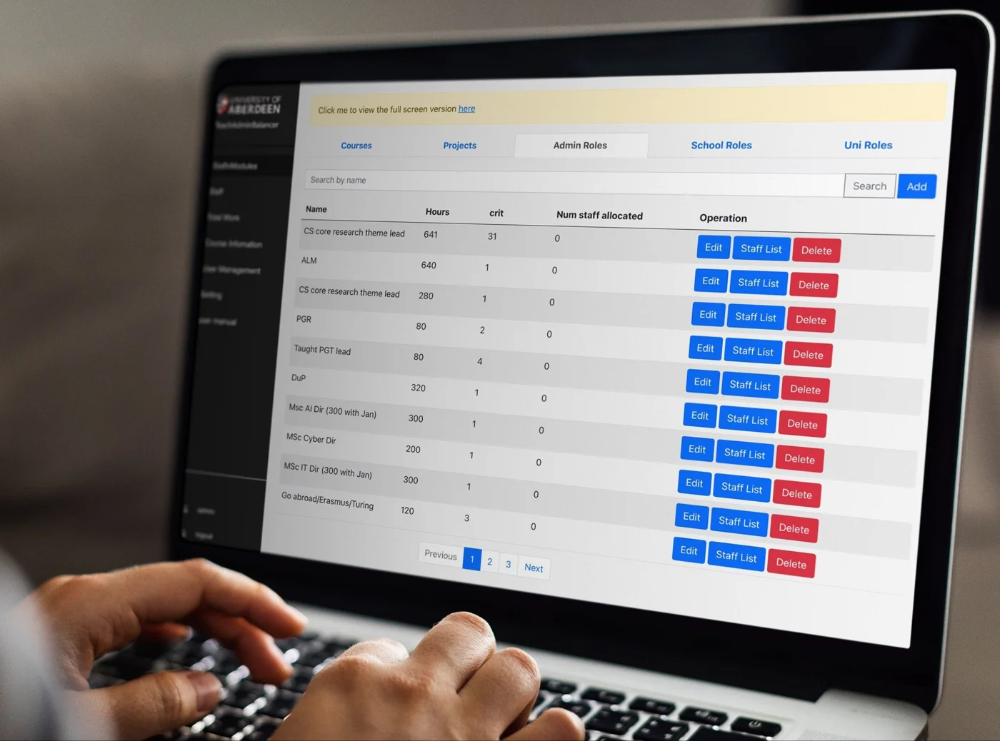
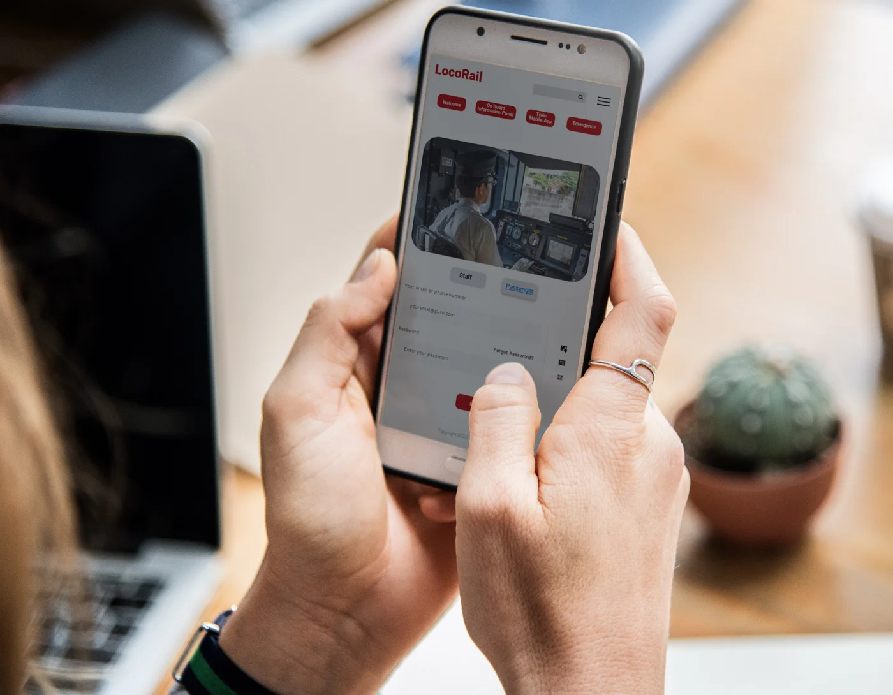
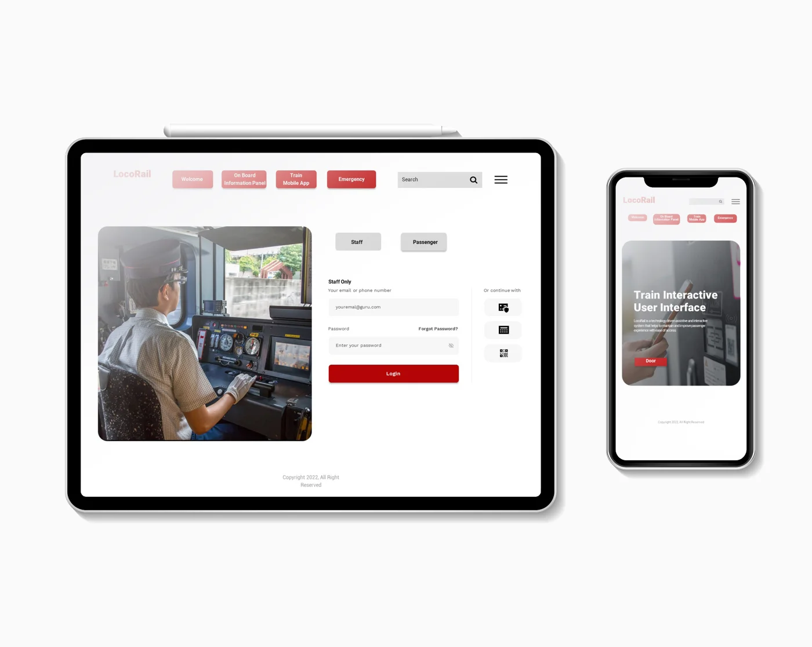

Part designer.
Making the complex feel clear.
- UX research & user journeys
- Interface design & prototyping
- Brand identity & visual communication
- Photography & digital media
FigmaAdobe Creative Cloud
THE PERSON BEHIND THE PRODUCTS
I’m Frederick Oppong Tabiri. A designer, Digital Product Manager and founder connecting creative thinking with practical delivery.
Explore my story ↓
FROM VISUAL STORIES TO DIGITAL PRODUCTS
My career began in graphic design and visual communication. It grew into UX, digital media and product delivery.
At the Forestry Commission Ghana’s Wildlife Division, I led creative and digital communication for conservation work across 23 protected areas. That experience taught me to translate complex subjects into clear stories and useful experiences.
After an MSc in Information Technology at the University of Aberdeen, I brought my creative and technical background together. Today, through TabSphere LTD, I shape product direction, guide UX/UI and coordinate delivery across SaaS, customer engagement and logistics.
I work from the problem through to release: requirements, user journeys, priorities, acceptance criteria, QA and UAT. I collaborate with developers who carry out production implementation.
TWO WAYS OF THINKING. ONE CONNECTED PROCESS.
Making the complex feel clear.
Turning the right problem into something usable.
A FEW VIEWS OF MY WORK
Photography, interface concepts and responsive design, drawn from my creative archive.





HOW I WORK
Clarify the user problem, business goal and constraints.
Map journeys, prototype ideas and define priorities.
Coordinate implementation against clear acceptance criteria.
Test the experience, validate releases and direct improvements.
LET’S MAKE SOMETHING USEFUL
Let’s talk about product, design and digital delivery.
t02ft22@gmail.com